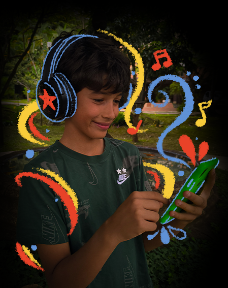

Dale Play a lo que Sientes
Elige tu estado de ánimo y abre una playlist curada por Sonora Lab en Spotify.

Música llena de ritmo y alegría para esos días donde todo se siente mejor.


Sonidos suaves y envolventes para estudiar, crear o enfocarte en lo que más importa.


Respira, baja el ritmo y déjate llevar por melodías que transmiten calma.


Cuando necesitas reconectar contigo, la música puede acompañarte.


Sonidos intensos, emocionantes y llenos de fuerza para activarte.

¿A qué suena
lo que sientes?
Este proyecto explora cómo la música filarmónica y la música actual influyen en las emociones, la atención y la percepción de niños y adolescentes entre los 10 y 15 años.
A través de entrevistas, observación y experiencias interactivas, descubrimos que la música clásica puede generar calma, imaginación y concentración cuando se vive desde lo visual y lo emocional.
La investigación busca crear nuevas formas de conectar a las audiencias jóvenes con la música filarmónica mediante diseño, interacción y experiencias digitales más cercanas a su realidad.

Cada
instrumento
tiene una voz...
¿quieres escucharla?
Haz clic sobre cualquier instrumento y descubre cómo suena dentro de una orquesta filarmónica.

Lo que se viene...
Pequeñas notas,
grandes emociones
Mantente
informado
Recibe primero noticias de conciertos, talleres interactivos y nuevas playlists.